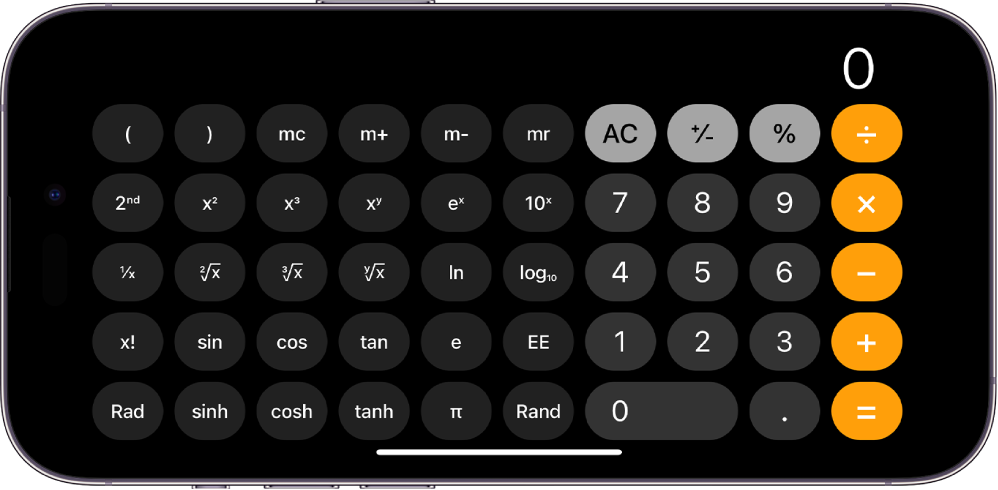

Welcome to my JavaScript Projects Page
Rock Paper Sissors

Classic Rock-Paper-Scissors game where the user plays against the computer. The interface allows the user to select their choice (rock, paper, or scissors), and the computer generates its choice randomly. Display the result on the screen, indicating whether the user won, lost, or if it's a tie. Added visual elements to make the game more engaging.
To-Do list

Dynamic Todo List application using HTML, CSS, and JavaScript. Users can add new tasks, mark tasks as complete, delete tasks, and organize them based on priority. The application should store the tasks locally, allowing users to access their Todo List even after refreshing the page.
Calculator
Build a basic calculator application with a user-friendly interface using HTML, CSS, and JavaScript. Has calculator operations such as addition, subtraction, multiplication, and division. Ensure that the calculator supports both keyboard and button input. The display should update dynamically as the user performs calculations, and it should handle basic arithmetic operations efficiently.
Stopwatch

Stopwatch App. Click a START button and timer will start counting up . Click a STOP and RESET button to stop and reset the time.